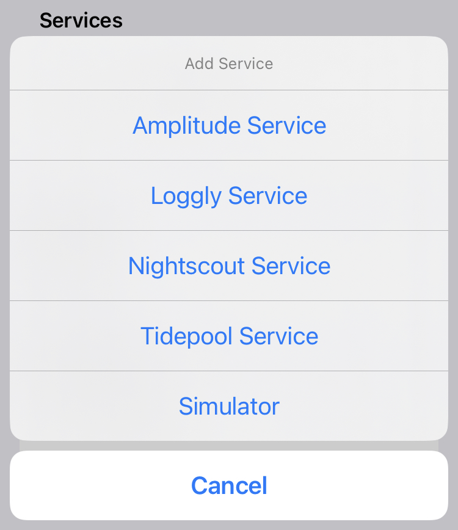
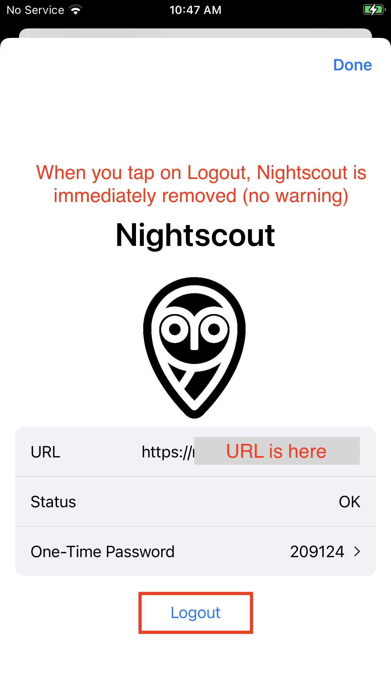
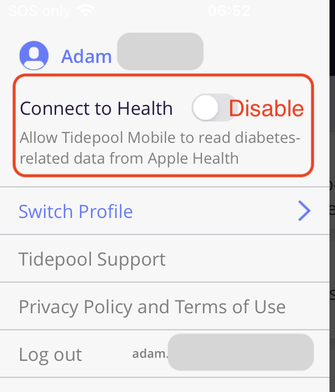
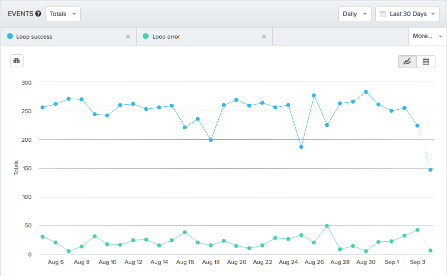

Optional: Services
Services for the Loop App¶
Near the bottom of your Loop settings screen is a section called "Services".
Sevices are Optional
- The Loop app will work whether you use these or not.
- Nightscout is highly recommended, but can be added later - you don't need it to get started.
The services are added by tapping on the + sign and choosing the service from the list. Services are shown alphabetically. The most common services are Nightscout and Tidepool.

Nightscout¶
There is a whole section in LoopDocs about Nightscout. For more information, see Nightscout Overview. That also has the links you might need to the official Nightscout Documentation (different website).
If you have an existing Nightscout site, it's still a good idea to review that section, but here's the quick summary of how to add your Site URL and API_SECRET to have your Loop data transmitted to your Nightscout site. If you cant remember your API_SECRET, it can be found under Settings, Reveal Config Vars for Heroku sites (or Application Settings, Connection Strings for Azure sites).
Nightscout Login¶
The graphic below shows the steps needed to add your Nightscout site to the Loop app. See the tip below about using stored passwords on the phone. If you have your credentials stored in passwords, simply tap the URL row to show the password option and select it.
- While in the Loop app, tap on the Settings icon, scroll down to Services and tap the Add Service Row
- Choose Nightscout Service
- Tap on the URL row
- If your credentials are not saved in your Passwords, enter the URL including https:// in this row
- This step has two options:
- If your credentials are saved in Passwords, tap on the Passwords icon and select them
- Both the URL and API_SECRET will be filled in from your Passwords
- Otherwise, manually fill in the API_SECRET row
- Tap on Login to add this site
The Loop app will begin uploading your data from this point on - it does not back-fill old data to the Nightscout site.
However, if there is a temporary outage of internet service or if the Nightscout site stops working temporarily, the Loop app will fill in all data not uploaded during the outage up to a total of 7 days worth of data.

The two most common errors in filling out this section are:
- Failure to use
https://in the site URL. If you usehttp://(see how that doesn't have the "s" at the end?), you will get an error message about an App Transport Security policy. - Having a trailing slash on the end of the URL (or an embedded space). If you copy and paste from a web browser, make sure to delete the trailing slash on the URL entry.
Do not block your Nightscout site
- One family had an app configured to block some websites for their child's phone and accidentally blocked their Nightscout URL - took them a while to figure out that mistake.
Add a Password
To make it easy to access your Nightscout URL and API_SECRET, add a password to your iPhone:
- The first step depends on iOS Version:
- For iOS 17 and earlier, use iOS Settings, Passwords
- For iOS 18 and newer, use the Apple Password app
- Tap + to add
- Enter a name, e.g., "Nightscout" in the Title row
- Enter the URL without the "https://" in the Website row
- Enter the URL including the "https://" in the User Name row
- Enter the API_SECRET in the password row
- If you use tokens, you can add those in the Notes section - they will be hidden behind the authentication for the passwords
Nightscout Logout¶
If you want to stop uploading to a given Nightscout site or change to a different Nightscout site, you must first logout. You can then login again at the new site.
The graphic below indicates how to remove your Nightscout site from the Loop app. This will stop future uploads from the Loop app to that site.

Tidepool¶
Data can be directly uploaded from Loop to Tidepool by adding it as a Service.
Please refer to the LoopTips: Data: Tidepool page for more information about Tidepool.
When you add the Tidepool Service to Loop, be sure to disable Tidepool Mobile ability to read from Apple Health.

Double entries
If you have Tidepool Mobile installed on your phone, with the Connect to Health feature enabled, while also using the Tidepool Service in Loop, all of your carb and insulin records will be doubled on the Tidepool Web browser display.
Even when you turn off the access to Health on the Tidepool Mobile app when you turn on Loop Tidepool service, you will still get 7 days of overlap because Loop stores 7 days of data.
There is a filter button on the Tidepool Website you can use to separate the two data sources.
You can still use the note taking feature with Tidepool Mobile when Health is not connected, although you must have internet connectivity for this to work.
Tidepool Support is available to help troubleshoot issues or answer questions about using Tidepool. Contact them via email at support@tidepool.org.
Loggly¶
Loggly is a free logging service. If you sign up for an account, you'll need to go under Source Setup and then Customer Tokens. Copy and paste your customer token into your Loop App settings for Loggly. Loggly is a free logging service. If you sign up for an account, you'll need to go under Source Setup and then Customer Tokens. Copy and paste your customer token into your Loop App settings for Loggly.

Amplitude¶
Amplitude is a remote event monitoring service and can be used to quickly identify errors and events with Loop. Amplitude stores the events and allows you to view those events as points in time. To retrieve the details of the events you will need to look at corresponding mLab data entries to get a complete picture of the issues. If you sign up for a free account with Amplitude, you will be given an API Key that you can enter here to have Loop integration setup.

Next Step: Loop Displays¶
Great job, almost finished! Now that you have completed your services, let's move onto understanding your Loop Displays. This page is a valuable tool for understanding your Loop and a great page to review when troubleshooting.